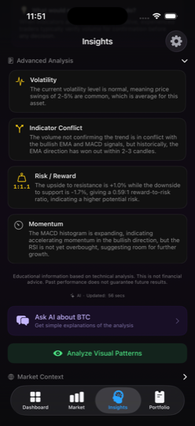

Crypto Security Best Practices: Protecting Your Portfolio in 2025
Cryptocurrency ownership comes with a unique responsibility: you are your own bank. Unlike traditional finance, where institutions provide layers of protection and insurance, the decentralized nature of crypto means that a single security mistake can lead to irreversible loss. In 2024 alone, billions of dollars were lost to hacks, phishing scams, and poor key management. Understanding and applying crypto security best practices is no longer optional — it is essential for anyone holding digital assets.
Whether you are a seasoned trader or just beginning to learn about cryptocurrency markets, this guide covers the most important security principles you need to follow in 2025 to keep your portfolio safe.
Why Crypto Security Matters More Than Ever
The cryptocurrency market has matured significantly, but so have the threats targeting it. Attackers have evolved from simple phishing emails to highly sophisticated social engineering campaigns, fake wallet apps, clipboard hijacking malware, and even AI-generated deepfake scams impersonating well-known figures in the crypto space.
Here is why crypto security deserves your full attention:
- Transactions are irreversible. Once crypto is sent to a wrong or malicious address, there is no customer service number to call. The transaction is final and permanently recorded on the blockchain.
- There is no FDIC insurance. Unlike bank deposits, cryptocurrency holdings are not insured by government agencies. If your exchange is hacked or you lose access to your wallet, recovery may be impossible.
- Attackers are more sophisticated. Modern crypto scams use fake websites that are pixel-perfect replicas of real exchanges, compromised browser extensions, and targeted spear-phishing campaigns tailored to individual investors.
- The stakes keep rising. As cryptocurrency adoption grows and prices appreciate, the incentive for attackers increases proportionally. More value in the ecosystem means more motivated adversaries.
The good news is that by following proven crypto security best practices, you can dramatically reduce your risk exposure and protect your assets against the vast majority of threats.
API Key Management: The Power of Read-Only Permissions
If you use any third-party application to track your crypto portfolio or study market data, API key management is one of the most critical security considerations. An API key is essentially a credential that grants an application access to your exchange account, and the permissions attached to that key determine exactly what that application can do.
Always Use Read-Only API Keys
When connecting any application to your exchange account, you should always create API keys with read-only permissions. A read-only key can view your balances and fetch market data, but it cannot execute trades, initiate withdrawals, or modify your account settings. This means that even if a read-only API key were somehow compromised, an attacker could not move your funds.
Best Practices for API Key Security
- Restrict permissions to the minimum necessary. If an app only needs to display your portfolio, it only needs read access. Never grant trading or withdrawal permissions unless absolutely required.
- Enable IP whitelisting. Most major exchanges allow you to restrict an API key to specific IP addresses. This adds an extra layer of defense even if the key is leaked.
- Rotate keys regularly. Delete old API keys and generate new ones periodically, especially if you have stopped using a particular service.
- Never share API keys in plain text. Do not store them in notes apps, emails, or messaging platforms. Use a password manager or an application that stores them in encrypted storage.
- Audit active keys. Review the API keys on each of your exchange accounts at least once a month. Remove any keys that you no longer recognize or use.
The Importance of On-Device Processing
One of the most overlooked aspects of crypto security is where your data is processed. Many portfolio trackers and analytics tools send your data to cloud servers for processing. While this can be convenient, it creates additional attack surfaces: the data in transit, the cloud server itself, and the company's internal systems all become potential targets.
On-device processing eliminates these risks entirely. When all analysis, pattern recognition, and AI-driven insights happen directly on your phone or computer, your sensitive financial data never traverses the internet and never sits on a remote server waiting to be breached.
The benefits of on-device processing include:
- Zero cloud exposure. Your portfolio data, API keys, and analysis results never leave your device, so there is no remote server to hack.
- Offline functionality. Since processing occurs locally, features like AI analysis continue to work even without an internet connection.
- No third-party data sharing. Your financial information is never accessible to the app developer, their cloud provider, or any intermediary.
- Reduced attack surface. Fewer network connections and no cloud infrastructure mean fewer vectors for an attacker to exploit.
When evaluating any crypto tool, ask yourself: does this application need to send my data to a server? If the answer is no, look for alternatives that keep everything local. Your security posture improves significantly when your data stays on hardware you physically control.
Hardware Wallets vs. Software Wallets
Choosing the right type of wallet is a foundational crypto security decision. Both hardware and software wallets have their place, but understanding the tradeoffs is essential for protecting your assets appropriately.
| Feature | Hardware Wallets | Software Wallets |
|---|---|---|
| Private key storage | Offline, on dedicated chip | On device (phone/computer) |
| Vulnerability to malware | Very low | Moderate |
| Convenience | Requires physical device | Always available on phone |
| Cost | $50 - $250+ | Usually free |
| Best for | Long-term storage (cold storage) | Frequent transactions |
When to Use a Hardware Wallet
If you are holding significant amounts of cryptocurrency for the long term, a hardware wallet is the gold standard. Devices like the Ledger Nano or Trezor store your private keys on an isolated chip that never connects directly to the internet. Even if your computer is compromised by malware, the hardware wallet requires physical confirmation of each transaction.
When a Software Wallet Is Appropriate
Software wallets are suitable for smaller amounts that you need to access frequently. Choose reputable, open-source wallets with strong security track records. Always ensure you have backed up your seed phrase securely and that the wallet application itself is downloaded from official sources.
Pro Tip: Use Both
A common strategy among experienced crypto holders is to use a hardware wallet as a "savings account" for the majority of their holdings and a software wallet as a "checking account" for day-to-day transactions. This approach balances security with convenience.
Exchange Security: What to Look For
Not all cryptocurrency exchanges are created equal when it comes to security. Before depositing funds on any exchange, evaluate the following criteria:
Essential Exchange Security Features
- Two-factor authentication (2FA). The exchange should support 2FA, ideally through an authenticator app (like Google Authenticator or Authy) rather than SMS, which is vulnerable to SIM-swapping attacks.
- Cold storage policy. Reputable exchanges keep the vast majority of customer funds (typically 90% or more) in offline cold storage that is inaccessible to online attackers.
- Proof of reserves. Leading exchanges now publish cryptographic proof that they hold sufficient reserves to cover all customer deposits. Look for exchanges that undergo regular third-party audits.
- Insurance fund. Some major exchanges maintain insurance funds to cover losses in the event of a security breach. While not a guarantee, it demonstrates a commitment to user protection.
- Withdrawal whitelisting. This feature allows you to restrict withdrawals to a pre-approved list of wallet addresses, adding a significant barrier against unauthorized transfers.
- Anti-phishing codes. Some exchanges let you set a personal code that appears in all legitimate emails from the exchange, making it easy to identify phishing attempts.
Major exchanges like Binance, Coinbase, and Kraken have invested heavily in security infrastructure. However, no exchange is immune to risk. The general rule remains: do not keep more funds on an exchange than you need for active trading or learning purposes.
How ChartScope Handles Security
ChartScope was built from the ground up with the principle that your financial data should never leave your device. Here is how the app implements crypto security best practices at every level:
iOS Keychain for API Key Storage
When you connect an exchange account in ChartScope, your API credentials are stored exclusively in the iOS Keychain — Apple's hardware-encrypted secure storage system. The Keychain leverages the device's Secure Enclave, a dedicated security coprocessor that provides an additional layer of hardware-level protection. Your API keys are never stored in plain text, never written to log files, and never transmitted to any external server.

Privacy-First AI Architecture
ChartScope's core market analysis — trend classification and technical indicator computation — runs entirely on your device using Apple's Core ML framework. Your API keys, portfolio balances, and exchange connections are never transmitted to any server. AI narrative explanations, chat, and chart pattern recognition use privacy-gated cloud functions on edge infrastructure, and only activate after you explicitly grant consent in-app. There is no passive data upload, no background telemetry, and no remote database of your personal financial activity. You can read more about this approach in our Privacy Policy.
Read-Only by Design
ChartScope only requests read-only API permissions from your exchange accounts. The app is architecturally designed so that it cannot execute trades, initiate withdrawals, or modify your exchange account in any way. Even if the impossible happened and someone gained access to your device, ChartScope's read-only architecture means your funds remain safe on the exchange.
No Analytics, No Tracking
Unlike many apps in the crypto space, ChartScope contains zero tracking code, zero analytics SDKs, and zero advertising frameworks. Your learning activity, your portfolio composition, and your usage habits are completely private. We believe that an app designed to help you learn about markets should not be harvesting your data in the process.
Common Crypto Scams to Avoid
Even with strong technical security measures in place, human error remains the leading cause of crypto loss. Familiarize yourself with these common scam patterns so you can recognize and avoid them:
Phishing Attacks
Attackers create convincing replicas of exchange login pages, wallet interfaces, or popular DeFi platforms. They distribute links to these fake sites through emails, social media, search engine ads, and even direct messages. Always verify the URL in your browser's address bar before entering any credentials, and bookmark the official websites of exchanges you use regularly.
Fake Giveaway Scams
These scams promise to "double your crypto" if you send a certain amount first. They often impersonate well-known figures like Vitalik Buterin or Elon Musk on social media and YouTube livestreams. No legitimate person or organization will ever ask you to send cryptocurrency to receive more in return.
Pump-and-Dump Schemes
Coordinated groups artificially inflate the price of a low-cap token through aggressive promotion in Telegram groups, Discord servers, or social media. Once the price spikes and newcomers buy in, the organizers sell their holdings, crashing the price and leaving latecomers with significant losses.
Fake Wallet Apps
Malicious apps disguised as legitimate cryptocurrency wallets appear periodically on app stores. These apps steal your seed phrase or private keys the moment you enter them. Only download wallet applications from official sources and verify the developer's identity before installation.
SIM-Swap Attacks
Attackers convince your mobile carrier to transfer your phone number to a SIM card they control. They then use SMS-based 2FA codes to access your exchange accounts. Protect yourself by using app-based 2FA instead of SMS, and contact your carrier to add a PIN to your account.
Clipboard Hijacking
Malware silently monitors your clipboard and replaces cryptocurrency addresses you copy with the attacker's address. Always double-check the first and last several characters of any wallet address after pasting it, especially before confirming a transaction.
Red Flags to Watch For
Be immediately suspicious of unsolicited messages promising guaranteed returns, pressure to act quickly, requests for your seed phrase or private keys, and any scenario where you are asked to send crypto to receive crypto. Legitimate projects and services will never ask for your private keys or seed phrase under any circumstances.
Security Checklist for Crypto Holders
Use this checklist as a regular audit of your personal crypto security posture. Review it monthly and address any gaps immediately:
Your Crypto Security Checklist
- Enable app-based two-factor authentication (not SMS) on every exchange account
- Store the majority of long-term holdings in a hardware wallet
- Use read-only API keys for all portfolio tracking and analytics apps
- Back up seed phrases on physical media (metal or paper) and store in a secure location
- Never share seed phrases, private keys, or passwords with anyone
- Use a unique, strong password for each exchange and crypto-related account
- Use a password manager to generate and store credentials securely
- Enable withdrawal address whitelisting on all exchange accounts
- Verify URLs carefully before entering credentials on any website
- Audit API keys monthly and revoke any that are no longer in use
- Keep device operating systems and apps updated to patch security vulnerabilities
- Use tools with on-device processing to minimize cloud exposure
- Set up anti-phishing codes on exchanges that support them
- Contact your mobile carrier to add a SIM-swap protection PIN
- Review exchange security features before depositing any funds
Building a Security-First Mindset
Crypto security is not a one-time setup; it is an ongoing practice. The threat landscape evolves constantly, and staying informed is one of the most effective defenses you have. Follow reputable security researchers, read exchange security bulletins, and stay skeptical of anything that seems too good to be true.
When choosing tools to help you learn and monitor the crypto market, prioritize applications that respect your privacy, minimize data collection, and process information locally on your device. The fewer places your sensitive data exists, the fewer targets an attacker has to exploit.
If you are looking for a way to study cryptocurrency markets without compromising on security, ChartScope keeps your API keys and portfolio data entirely on your device, uses iOS Keychain encryption, and enforces strictly read-only exchange access. AI-powered insights are optional and only activate with your explicit consent. You can learn more about the app's approach on our About page, or reach out through our Support page if you have questions about how we handle security.
Important Disclaimer
This article is provided for educational and informational purposes only. It does not constitute financial advice, investment advice, trading advice, or any other kind of professional advice. Cryptocurrency markets are highly volatile and carry significant risk. Always conduct your own research and consult with a qualified financial advisor before making any investment decisions. ChartScope is an educational tool and does not provide financial recommendations. Past performance of any cryptocurrency does not guarantee future results.